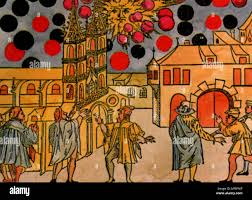
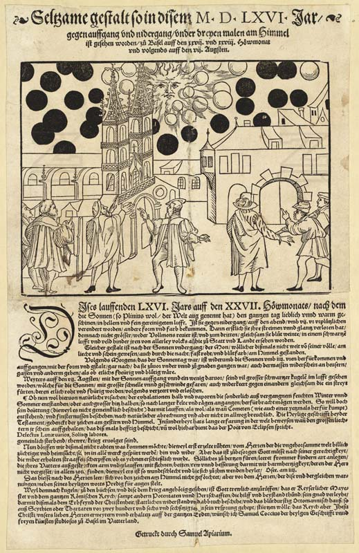

BASEL 1566

Introduction

Samuel Apiarus (1530–1590), a successful peripatetic printer, sensed the public’s hunger for information and their desire for an explanation regarding the events in Basel. He published a small broadsheet leaflet, measuring 18.2 by 23.8 centimeters, to memorialize these otherworldly occurrences. Assisted by the artist Samuel Coccius, Apiarus designed a woodcut that relied on first- and second-hand accounts, as neither man had witnessed the events personally. The scene depicts the third and final sighting, set against the recognizable backdrop of the Basler Münsterplatz and Basel Cathedral. In the lower third of the image, spectators appear astonished and deeply disturbed. Above them, the sky and sun are swarmed by whirling black and white spheres. Most striking is the sun itself, portrayed with wild, asymmetrical rays and a facial expression that is both perturbed and stern.
Accompanying the illustration is a succinct text with an explicitly Christian tone. Faithful believers of good moral standing are exhorted to view the Basel phenomena as a divine sign, akin to the miracles of the Bible. The message was clear: those leading a pure Christian life, free from sin, have nothing to fear in these tumultuous times, while sinners face judgment and condemnation in the afterlife. At the time of publication, many believed the spectacle symbolized the urgent need for the Swiss to seek not only repentance but also divine intervention against the looming Ottoman threat.
These stories were no joke. Such sightings were regularly reported in various sources up to the 18th century. These events were mostly attributed to either God or the Devil. They were primarily anecdotal accounts, referring to sightings in a distant city. In this case, it is difficult to determine whether these sightings were inspired by real events. However, there are also sightings mentioned in almanacs produced and distributed in the region where these sightings were said to have occurred. In this case, it could be argued that these stories were inspired by a real natural phenomenon. But it is also possible that they were entirely fictional, made convincing by oral tradition. For example, some people might read and retell them as if they had actually witnessed them or knew someone who had.
History
In 1566, on the 27th and 28th of July, and again on the 7th of August, strange shapes appeared in the skies over Basel during sunrise and sunset. On the 27th of July, following a clear and warm day, the sun suddenly altered its shape and color around 9 pm. First, it lost all its radiance, shrinking to the size of a full moon, and finally appeared to "weep tears of blood" as the air behind it turned dark. This phenomenon was witnessed by the entire population of the city and the surrounding countryside. Similarly, the moon, which was nearly full, assumed an almost blood-red color in the sky, adding to the celestial anomaly.
The following day, Sunday, the sun rose at about six o'clock, maintaining the same ominous appearance it had held before setting. It illuminated the houses, streets, and surroundings as if everything were blood-red and fiery. At the dawn of August 7, an even more extraordinary sight occurred: large black spheres were seen darting to and fro with great speed and precision before the sun, clashing as if they were engaged in a fierce battle. Many of these spheres turned fiery red, and shortly thereafter, they would crumble and be extinguished.
The people of 1566 interpreted this event as a battle between the forces of Heaven and Hell. Many modern people have come to believe that what the citizens of Basel witnessed was the result of some sort of alien activity that culminated in a battle in which many craft were destroyed. While not everybody agrees with this interpretation, nobody has so far been able to come up with a credible alternate explanation.
Theories
Samuel Coccius (also known as Samuel Koch) was the original historian and author who penned the text of the famous broadsheet (Flugblatt). More than just a chronicler, he interpreted the celestial phenomena as a stern "divine sign." His objective was explicit: to exhort the Swiss public toward collective repentance and prayer, framing these wonders as omens in the face of existential threats—most notably the Ottoman expansion and the ravages of religious wars. Although he did not witness the events first-hand, his ability to weave various testimonies into a potent theological narrative transformed the Basel skies into an enduring political and religious document.
The historian and specialist in anomalous phenomena, Ulrich Magin, provides a critical and skeptical reading of the Basel and Nuremberg broadsheets. He does not view these reports as scientific documentation but rather as "embellished hearsay reports" carefully crafted for religious and promotional purposes. For Magin, the woodcuts depicting clashing celestial spheres are not scientifically accurate astronomical records; instead, they are visual tools used within the framework of what could be termed the "yellow journalism" of the era. The primary goal was to incite awe, attract readers, and reinforce theological interpretations rather than convey objective physical truths.
With this perspective, we shift from asking "what happened?" to "what was communicated?". The black and red spheres over Basel were not physical objects, but a visual symbolic language; a pictorial code declaring that society was ailing, that conflict had reached its zenith, that change was coming, and that repentance was mandatory. In this context, the sky was not merely a stage for celestial observation, but a text to be read—a semiotic document reflecting the existential dread of 16th-century humanity.
They say that the black and red orbs that "fight" in the sky indicate very advanced technology that existed in the Middle Ages, but it was not ordinary human technology. Some link it to the civilization of Atlantis or advanced prehistoric civilizations (such as the "lost civilization" mentioned by Plato) that had airplanes, energy weapons, or weather control devices, and that this incident was a "test" or "show of force" from the remnants of that civilization.
This perspective offers a fascinating possibility: that the black and red spheres over Basel were neither natural phenomena nor religious symbols, but rather the manifestation of lost chemical or astronomical knowledge from antiquity. According to this theory, 16th-century observers might have been witnessing an "experiment" or an "industrial phenomenon" derived from hidden ancient sciences—such as esoteric alchemy or occult astronomy. In this context, writings on "Lost Knowledge" link these sightings to the works of alchemists who sought to replicate cosmic processes on Earth or within the atmosphere, turning the sky into an "open laboratory" for sciences that were beyond the public's comprehension at the time.
Some have interpreted the event as a conflict between secret societies or "hidden elites" (such as dragons, the Illuminati, or ancient Masonic groups) who used advanced technologies to fight in the sky. They say the woodcut depicts "energy weapons" or "plasma balls" used in a secret war between factions within Europe during the Reformation.
Some writers claim that the phenomenon was a test of advanced weapons (such as electromagnetic weapons or directed energy) conducted by a state or secret society in the 16th century, and that the document was "covered up" with a religious interpretation to conceal the truth.
In some of the more outlandish theories (such as those relating to the "Montauk Project," the "Philadelphia," or "time travel"), the spheres are said to have been time vehicles, "objects from parallel dimensions," or the result of failed time experiments, and that they appeared by mistake in 1566.
This perspective offers a non-traditional interpretation, viewing the Basel phenomenon as a secret symbol of the end of days or the imminent Second Coming. According to "Hidden History" proponents, the woodcut is not merely a visual record but a map of encoded symbols, where the black spheres represent demonic forces attacking the "Light of Truth" (the Sun). This theory suggests that religious and political authorities suppressed the true interpretation of these cosmic signs to maintain social control, rebranding them as calls for repentance or warnings of Ottoman threats to obscure "lost prophecies" that signaled a radical shift in the world order during the Reformation era.
Description
Black Ball
On the morning of August 7, 1566, Samuel Coccius documented a phenomenon that shook the city of Basel to its core. He described the appearance of "large black spheres" (grosse schwartze Kugeln) moving with immense speed and precision across the face of the sun. What rendered the scene truly terrifying was their "to and fro" motion and their clashing, which Coccius described as "as if they led a fight" (als ob sie einen Streit führten). He noted that many of these objects would suddenly turn fiery red before crumbling, burning up, and eventually extinguishing, reinforcing the contemporary perception of a "celestial battle" or a divine omen.
This is the chronologically earliest and most influential interpretation of the era, where the phenomenon was understood as a direct celestial message beyond scientific inquiry. The black spheres were viewed as signs of divine wrath and warnings preceding inevitable punishment. In the collective mindset of the time, the color black symbolized sin, darkness, and spiritual corruption. The "multiplication" and clashing of these spheres in the sky were seen as visual evidence of the spread of evil and mounting strife on Earth. For them, the sky was a mirror of the soul, and any celestial disturbance was a reflection of human depravity.
In an era of religious reform and tensions, people tended to see anything strange as a divine sign; black orbs might be a collective projection of fears of war, plague, or religious conflict.
Carl Jung (in his book on flying saucers) sees such phenomena as archetypal symbols of the collective unconscious, where the black spheres represent "darkness" or "chaos" in a time of crisis.
Red Ball
Moving away from myth, modern science leans toward explaining the Basel events as atmospheric optics. It is highly probable that the residents witnessed a Parhelion (Sundog), where "mock suns" appear due to light refraction through ice crystals in the clouds. Furthermore, the presence of Cirrus clouds or a high concentration of volcanic dust in the upper atmosphere can cause Rayleigh scattering, giving the sun and moon a chilling blood-red hue. As for the "black spheres," they could have been massive sunspots or optical illusions (afterimages) caused by prolonged staring at the intense solar glare.
Some theories link the "bleeding sun" of Basel to the phenomenon of Blood Rain, a well-documented historical and scientific occurrence. Proponents of this view suggest the possible presence of anomalous red cells or biological micro-particles suspended in the atmosphere, similar to the Kerala red rain in India (2001). In that instance, the rainfall contained red particles resembling biological cells but lacking traditional DNA. In the case of Basel, such particles could have filtered the sunlight to create a crimson hue or fell as deposits that stained the environment, leading residents to believe the sky itself was "bleeding."
Ball Fight
Research
A single document, created by a single religious writer working for the church, claimed that many people saw the events, but we only have that one document, not any accounts from the scores of multiple witnesses. Why don't we have any other accounts from witnesses? There were educated people in Basel.
This analysis introduces a crucial historical dimension: the possibility that events like "Basel" were sensationalized or fabricated for specific ends. Much like U.S. newspapers in the 1900s that invented tales of "airships" or fantastic phenomena to boost circulation (without the social risk of reporting local crimes), history is rife with manufactured wonder. Similarly, there is a long-standing tradition of using "pious frauds"—fictional accounts of visits to hell or terrifying celestial omens—to drive religious repentance. In these cases, the veracity of the tale was secondary to its perceived moral or spiritual utility.
The Forest Fire Hypothesis
This analysis proposes a rational explanation for the 1566 Basel phenomenon: a massive forest fire. Smoke and ash can travel for miles, which would explain the blood-red tint of the sun and moon due to light scattering. The "black spheres" described as clashing and disintegrating could have been large chunks of airborne ash that glowed red before crumbling. The fact that ONLY Basel reported this suggests it was a localized event.
Regarding the lack of reports on the "scent of fire" or "heat," it is possible that 16th-century residents, being intimately familiar with smoke and fire in their daily lives, chose to focus on the terrifying and alien visual spectacle—the crimson skies and falling debris—rather than the mundane sensory details of heat and smell.
The Volcanic Eruption Theory
Current conclusions favor the theory that the 1566 Basel phenomenon was caused by a distant, unidentified volcanic eruption. History is rife with "mystery eruptions" whose source remains unknown but whose atmospheric effects are far-reaching. In this scenario, the "black spheres" were likely volcanic ash or tephra, which differ significantly in density and behavior from typical wood ash.
This theory accounts for the time intervals between the reports (July 28th and August 7th), as it is common for active volcanoes to erupt in intervals, or for volcanic plumes to travel and reach specific areas in successive waves. The lack of total ash cover in the city could be explained by wind patterns only carrying larger embers or sulfate aerosols, which were sufficient to alter the appearance of the sun and moon without depositing a thick layer on the ground.
The volcano theory is so unlikely that you can drop it. There isn't any active volcano even close to Basel. The closest region with active volcanism is the Eifel ridge some 200 km away from Basel. The last eruption in that region was ~13000 ago. It is absolutely guaranteed that an eruption in 1566 would have been well recorded, and it would have been observed not only in the city of Basel, but by literally dozens of million people in Europe.
The Hallucination Theory
In moments of desperation to find a logical explanation, the "Mass Hallucination" hypothesis emerges. Is it possible that the people of Basel consumed wild mushrooms or were affected by Ergot fungus—which grows on grain and causes potent visual hallucinations? Perhaps a Sunday celebration led them to ingest something that caused them to stare at the sky and perceive "battling spheres." Or, as you suggested, could volcanic fumes have contained substances that altered their consciousness, leading them to interpret natural phenomena (like dust or debris) as celestial warfare?